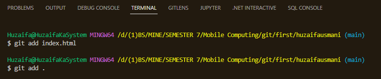

Initial Commands
> git init
>> This command initiats the git process by converting your current folder into a git folder, you
can see that by making hidden files visible there will be a folder in your directory with name (.git)
> git status
>> This command shows the untracked changes/files that can be added and then can be committed.
> git add

>> This command can either be used for a single file like git add [filename.extension]
>> or it can be used like git add . , to add
all untracked changes/files.
> git commit -m ""
>> This command is used to commit the added changes, the -m is for the commit message. and the "" contain the message
>> You can also commit with a description along with a message by git commit -m "some message" -m "some description" , the second
-m will be for the description.
> git pull
>> If the remote repository has been changed when you last worked on it you can pull the changes so that your local repository reflects the remote.
>> Always run the pull command whenever you continue working so that you know what changes were made.